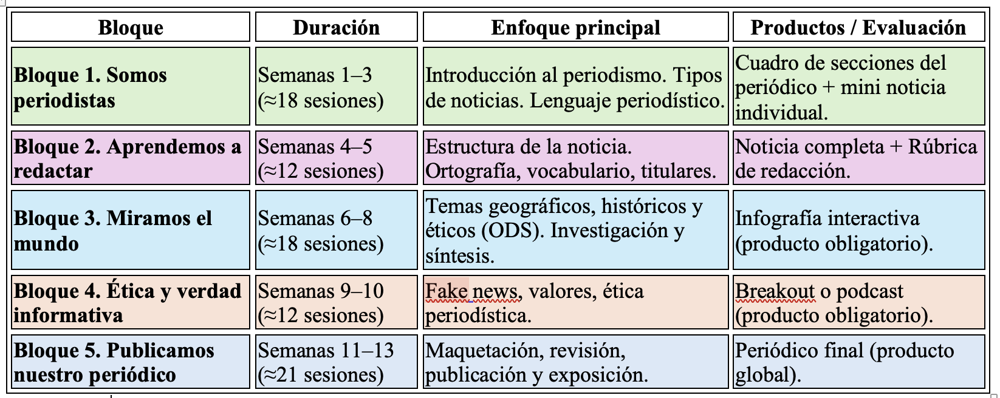

¡Bienvenidos!
🗞️ ¡Bienvenidos al proyecto Voces de 3.º ESO!
Durante este trimestre os convertiréis en periodistas, redactores, diseñadores y reporteros.
Vuestra misión será crear un periódico de aula, donde contaréis noticias, historias y reflexiones sobre vuestro entorno y sobre el mundo que os rodea.
A través de este proyecto vais a:
🧩 aprender a escribir diferentes tipos de textos periodísticos,
🌍 relacionar lo que ocurre en el mundo con los valores que estudiamos en clase,
💬 expresar vuestras opiniones con respeto y creatividad,
🎨 diseñar materiales digitales como infografías interactivas,
y 🕵️♀️ participar en un breakout educativo lleno de pistas y misterios que pondrá a prueba vuestra mente periodística.
¿Qué vamos a hacer?
El proyecto se desarrollará en cinco fases:
